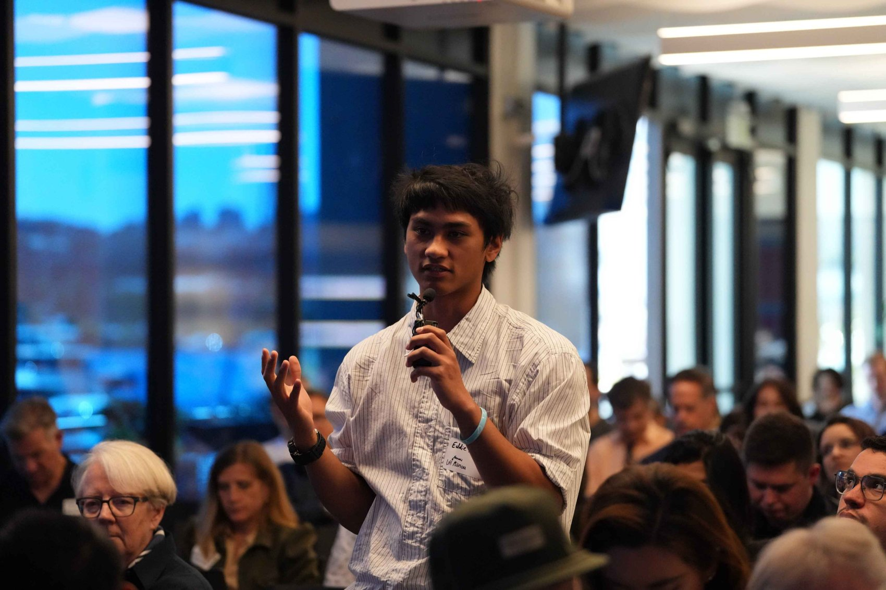

Eddie
Kuoha IV
I'm a mechanical engineering student who builds robot hardware, and I'm working toward a career in space robotics.
SchoolUniversity of Hawaii at Manoa
MajorMechanical Engineering, class of 2028
FocusSpace robotics hardware
AvailableSpring and Summer 2027
About
I grew up in Aiea and almost became an electrician. I picked engineering on a whim, switched to mechanical, and it clicked in ME 213 when our robot actually worked. I like making something out of nothing.
Now I'm narrowing that down to space robotics. Outside class I co-founded UH Manoa's IEEE Robotics and Automation Society club, and this past summer I did an NSF REU at the University of Washington.
OngoingUndergraduate researcher, Dr. Drew's lab at UH Manoa
2026 to 2027Payload engineer, University Rover Challenge (Team RoSE)
2026NSF REU Fellow, University of Washington MEM-C
2025 to 2026Lead systems engineer, NASA RASC-AL finalist team
OngoingCo-founder, IEEE RAS at UH Manoa

Projects
Hardware I designed, built, or led